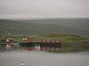

overcast-sky

Definition: Overcast or overcast weather, as defined by the World Meteorological Organization, is the meteorological condition of clouds obscuring at least 95% of the sky. However, the total cloud cover must not be entirely due to obscuring phenomena near the surface, such as fog.Overcast, written as "OVC" in the METAR observation, is reported when the cloud cover is observed to equal eight oktas (eighths). An overcast sky may be explicitly identified as thin (mostly transparent), but otherwise is considered opaque, which always constitutes a ceiling in aviation meteorology.Sometimes clouds can be different colors such as black or white, but overcast usually refers to darker skies. In some cases, it can be impossible to see distinct borders of clouds or the sky may be covered by a single type of cloud, such as stratus, and the whole sky will be a dull white.
Source: Wikipedia
Wikipedia Page (Something wrong with this association? Let us know.)
Wikidata Page (Something wrong with this association? Let us know.)